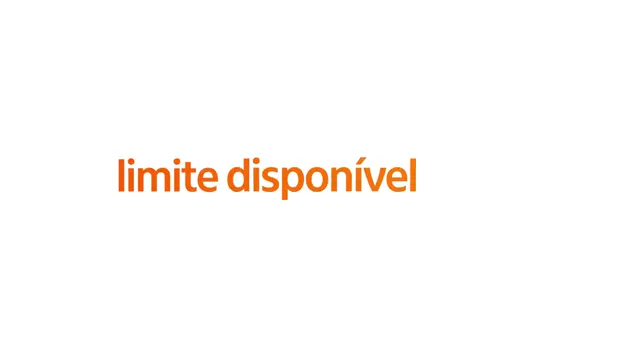
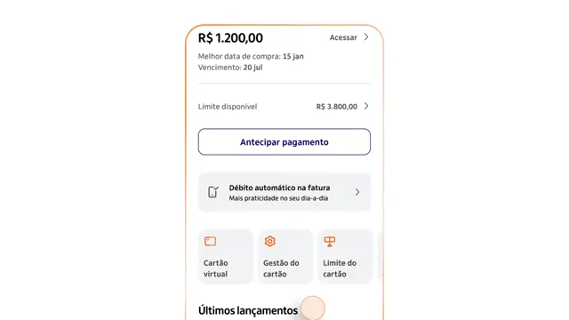
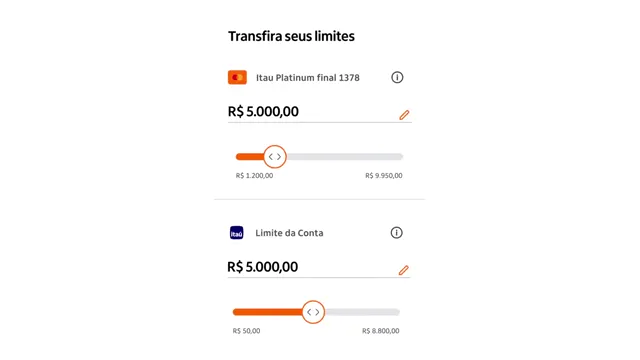
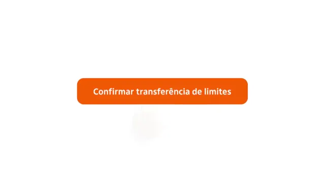
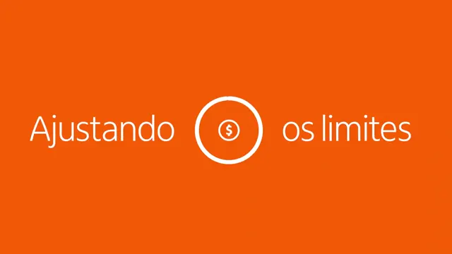
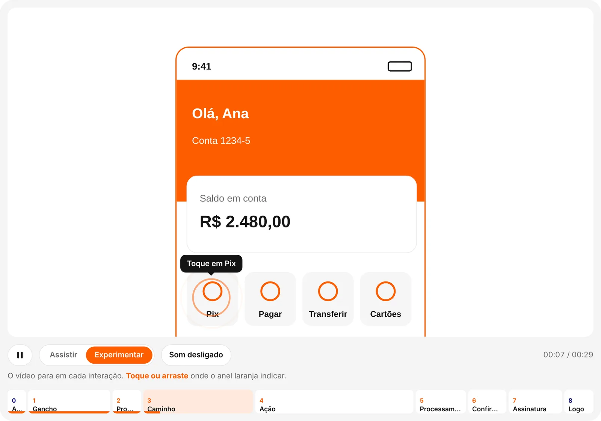

Opening
The orange screen opens into a white squircle.
A 25 to 30 second product video in the bank's style used to take a motion designer up to 4 hours. I turned that style into a method, and the method into an agent anyone at Itaú calls from Microsoft Teams.
The experiment
Before touching the bank's tools, I tested the idea with Claude alone, on public material and fictional screens.
I needed to deliver a product video in Itaú's style, with no access to After Effects and no availability from the motion team. The challenge was to match the quality of the official videos without relying on those resources.
Claude generates motion as code: every frame is calculated, rendered and exported as MP4. That gives exact timing, quick rounds of changes and output up to 4K. What was missing was teaching it what looking like Itaú means.
I downloaded official Itaú motion videos from YouTube and gave them to Claude for a frame-by-frame analysis. Instead of describing the style with adjectives, I let the reference speak.





The analysis separated how each object moves. These eight behaviours appear in every video, rebuilt here in code.
The orange screen opens into a white squircle.
Words enter one by one as the spacing closes. The keyword arrives in orange at twice the size, then settles.
One word lands at once, with weight.
The screen floats with an orange outline, scrolls, zooms and swaps.
One element lifts out of the screen and becomes a card.
A peach cursor taps with a ripple and drags while the values change live.
A ring loads, a check appears and a white circle clears the screen.
A three-part sentence shrinks away and the logo closes with the sound signature.
The loose movements revealed a structure that repeats in every video. This was the turning point of the project.
The brand opens.
Fixed in every videoThe question that names the pain.
One impact word.
Navigation to the feature.
Tap, drag, fill in, confirm.
The system at work.
The result on screen.
The sentence that closes the story.
The brand closes.
Fixed in every videoBefore using the pattern on a new subject, I recreated Itaú's public tutorial and compared it with the original: the movements matched and the act structure held. Below, side by side, the original and the Transfer Limits test made with the same method: the same acts, at the same pace.
For any subject to fit the acts, content comes in through a Word script: one scene per page, with the screen's SVG. Claude reads the scenes, places each one in an act and applies that act's effect.
One scene per page, the screen embedded as SVG.
Each scene is placed in the act it serves.
The act decides how the scene moves.
A flat image can only move as a whole.
Screens must arrive as SVG layers, so each element can be tapped, dragged or lifted.
To prove the pattern didn't depend on the source videos, I picked a subject that wasn't in them and used fictional screens. The script was text only. The video came out with the same rhythm and language as the official ones.

The same test became an interactive page. In Watch mode it plays like a video. In Try mode it pauses at each tap and waits for the visitor to click or drag, with chapters you can jump to by act.
Result of the experiment: the pattern reproduces on any of the bank's subjects, as video or as HTML. It was validated, but still outside the environment where I had to deliver.
The application
What worked in Claude had to work inside the bank, where the tools are different.
I packed the learning into a skill: a file with the nine acts, each act's effects and the identity rules, plus the Word script template. What travels is the knowledge, not the tool.
The Claude app can't be installed at the bank and there is no access to Figma with MCP. But the premium Office licence gives access to the Opus 5.5 model inside Microsoft Copilot. The same model, in another environment.
I took the skill to Copilot together with the script and the screens' SVGs. Because the pattern was written as rules, not kept in a chat history, the model reproduced the same movements inside the bank.
The motion shipped within the 3-day deadline, counted from the request, at the level of the official videos.
The scale
After the delivery, I created a motion agent in Copilot with the prompt instructions and the skill fixed inside. Nobody needs to know the method to use it. The main rule: the video never starts until the person approves the plan.
“Make a dynamic motion graphics video for Itaú Bank that follows the script attached and demonstrates the content like a show reel.”
The final command is short, because the whole pattern already lives in the skill.
The opening and closing are the same in every bank video, so both clips sit ready in a folder the skill references. Itaú's videos have no narration, but they have their own soundtrack, as in the YouTube references. I chose three tracks the bank already uses and made the choice part of the agent's questions.
The file arrives already edited: opening, the motion from the script, closing and the chosen track. Nobody needs to open an editor afterwards.
Motion no longer depends on whoever knows After Effects. A one-off request with a deadline became a capability open to the whole bank.
| Aspect | Before | After |
|---|---|---|
| Who produces | A motion designer | Anyone with a script |
| Tool | After Effects | Agent in Copilot, via Microsoft Teams |
| Time per video (25–30 s) | Up to 4 hours | About 20 minutes |
| Opening, closing and soundtrack | Assembled by hand in the editor | Already in the delivered file |
The agent is published and open to anyone at the bank. I can't measure usage, but I've followed at least five videos made by other people.
Breaking down what already exists did more than asking for something nice.
Once the structure is defined, the subject becomes a variable.
Only what exists as a layer can be animated.
With the pattern ready, the hard part is deciding what to say.
Showing scene by scene before generating avoids rework: a mistake shows up in a table, not in a 20-minute video.
The skill worked wherever the model was, even without the original tool.
The flow was adapted for Word, SVG and Copilot. The skill holds the instructions and makes it happen.
Solving my own problem, then opening the solution to everyone, multiplied the impact.
Try the interactive demo, or get in touch to talk about a product challenge.
The Pix Agendado screens are fictional. The Transfer Limits tutorial is public on Itaú's YouTube channel. The Itaú brand belongs to Itaú Unibanco.